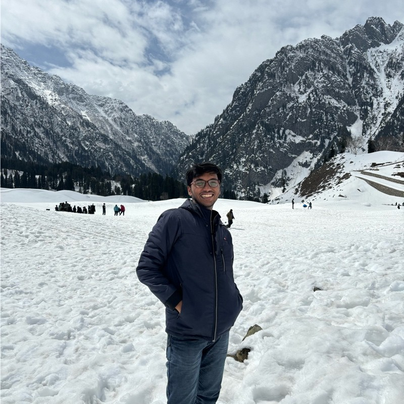

Akarsh Upadhyay
Applied Scientist · Microsoft · IIT Jodhpur
I build ML systems where the solution becomes the foundation for what comes next. Right now at Microsoft, I work on retrieval models for ad selection — intent-based encoder models, evaluation frameworks, and the data pipelines that determine whether any of it works.
Before that, I shipped AI features to millions of users at Zomato and researched text similarity at scale at Enterpret. I have a publication at ICDAR 2024 on document pretraining, and I studied Electrical Engineering at IIT Jodhpur.
What drives me is foundational work — the kind where getting it right unlocks progress for everyone who comes after.